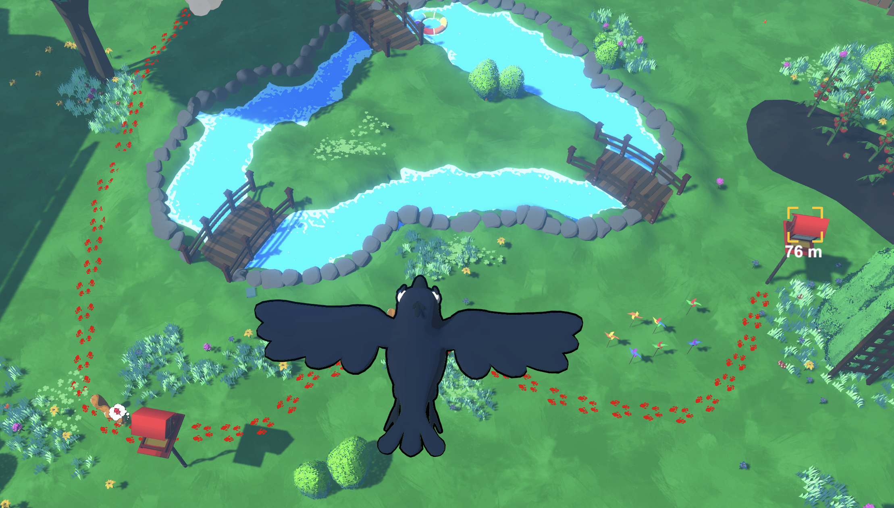
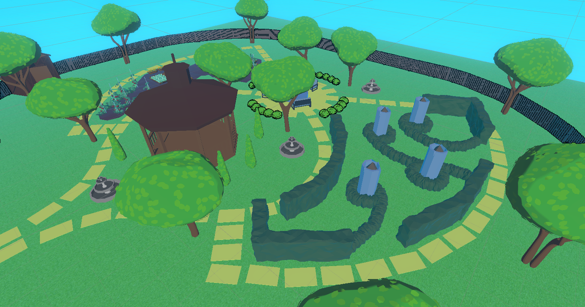
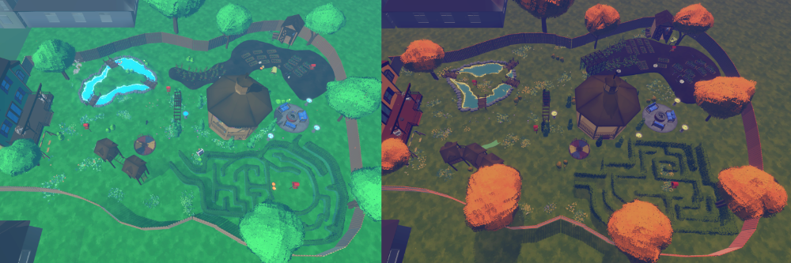

Scare Crow
Prototype
Scare Crow was one of 55 titles pitched to USC Games in Spring 2024. After a 2-step greenlight process, my pitch was one of 8 that were given the green!
Once you're through greenlighting, you become the creative director of a studio at USC, and have to attract other students to work on the game with you. After holding over 70 in-person interviews with potential candidates, I put together a team of 30 and got to work.
Prototype for Scare Crow's greenlight pitch.
Design Challenges
Scare Crow is a mixture of stealth and tower defense, which means there weren’t a lot of games to look to for inspiration or to "steal" solutions from when we had issues. Here are some of the biggest challenges we faced:
Squirrel Behavior
In Scare Crow, your enemies are squirrels that come into your backyard home and try to get to a bird feeder to eat the food inside. In early versions of Scare Crow, they would choose their own path to the feeder by finding and seeking cover. We actually rejected the idea of having set paths because we wanted the squirrels to have more “depth”.
In playtests, this was a disaster. Nobody could figure out where the squirrels were at, or where they were going next. Their decision making process was too opaque and too unpredictable, which turned the game into a squirrel chasing simulator where players just ran around attacking squirrels without using any strategy at all.

A playtester chases after squirrels in a build from October 2024.
Putting squirrels along paths like in a traditional TD game solved this problem instantly. It gave players enough information to make plans for the future instead of just running after their quarry.
The path for Wave 1.
Level Design
Initially I was tempted to think, since the general layout of each level would be the same, that we couldn’t consider the gameplay of each wave until we designed the whole backyard first. I essentially directed my team to create a backyard, and then fill it with gameplay. This made the levels feel directionless, like we had just shoved a game into some random 3d model of a backyard.
An early iteration of Scare Crow's first level.
After some reflecting I decided to have my designers re-do the layout of the levels with a new process. Instead of a whole backyard, I asked them to sketch out each wave individually, creating a little fragment of a yard to house each one. Then, we combined all the little fragments for each wave into a single backyard, merging and overlapping various features from each one.
This new approach molded the environment to the gameplay instead of the other way around, and helped the levels feel a lot less arbitrary.
Scare Crow's two levels. The finished version ended up being more much more compact than the original.
Stealth
Scare Crow started out as an even split between stealth and tower defense, but over time the balance shifted. We discovered that the fun of Scare Crow is less about sneaking around and more about setting up traps and having hilarious interactions with stupid squirrels.
Luckily, we never lost the stealth aspect of the game. You still have to avoid detection if you want to be successful, and hiding out for an ambush is a great strategy. But features like “squirrel hearing” didn’t add much to the experience, and I’m glad we focused more of our time on the interactions with squirrels themselves.
Directing a Game
I pitched Scare Crow as a junior and got greenlit at the end of that school year. I had never directed a game before and frankly I had no idea what I was doing at first.
What does a director even do?
This answer isn’t going to fit all directors, but after a lot of reflection, this is what I’d say to anyone who was going to be a first-time director:
Directors are basically teachers. You help a big group of different people learn how to fit their unique ideas and artistic sensibilities all into the same game. When people share their ideas, you have to advocate for and protect the overarching qualities that you want your game to have, but still allow it to be shaped by the discoveries of your team. Your job is basically to help people discover and understand what your vision is so they can all learn how to express their personal flavors to collectively form a cohesive work.
Also, when it comes down to the wire, you need to get yourself in the engine and make things happen. I don’t recommend stepping on people’s toes like this often, but chances are, this game means more to you than anyone. And take good care of your teammates. Years from now, people might not remember what exactly they worked on, but they'll remember what it was like to be on your team.